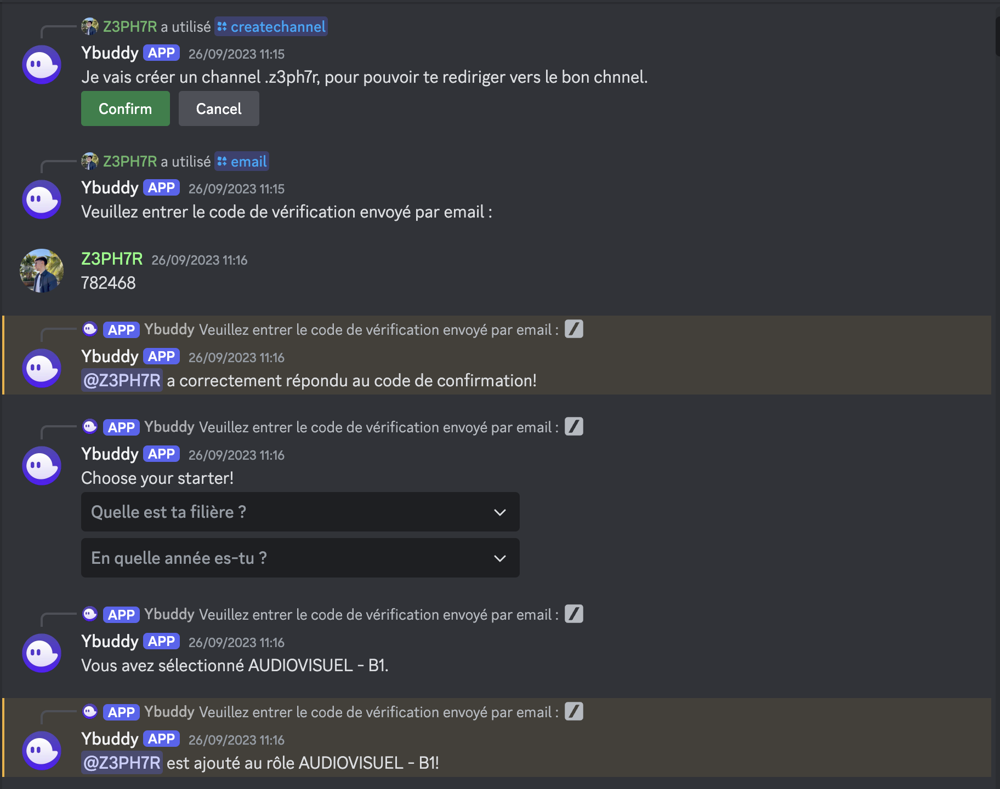

Ybuddy : Le bot qui fait tout… sauf le café (pour l’instant)
Si tu fréquentes Ynov Campus, tu as peut-être croisé Ybuddy, notre petit robot sympa qui gère tout sur le serveur Discord. Créé avec discord.js, Ybuddy est là pour faciliter la vie de la communauté. Oui, tu peux l'appeler le concierge digital du campus, il ne prendra pas mal !

Ybuddy a plusieurs talents. Voici son CV express :
- Création et gestion de salons éphémères : Ybuddy peut créer des salons à la demande pour des projets de groupe ou des réunions. Une fois la tâche terminée, il les supprime automatiquement, évitant tout encombrement. Il peut aussi générer l'intégralité des channels d'un serveur d’un seul coup et les nettoyer quand tu n’en as plus besoin.
- Attribution des rôles automatisée : Lorsqu'un nouvel utilisateur rejoint le serveur, Ybuddy crée un channel privé avec lui. Il lui demande son adresse email, envoie un code de vérification via un serveur SMTP, puis lui permet de choisir sa filière et son année grâce à une liste déroulante. Une fois validée, l’utilisateur reçoit automatiquement les rôles et permissions adaptés.
- Gestion complète des rôles : Ybuddy a le pouvoir de créer tous les rôles d'un serveur en un clin d'œil. Il gère aussi les permissions de manière précise, donnant à chaque utilisateur accès uniquement aux parties du serveur qui lui sont réservées. Il peut également supprimer ou administrer les rôles déjà existants.
- Système de vérification sécurisé : Grâce à l'envoi de codes via un serveur SMTP, Ybuddy garantit que chaque utilisateur est bien vérifié. Pas de faux comptes ou d'intrus, la sécurité est assurée à chaque étape.
- Humour en vieux français : Pour détendre l’atmosphère, Ybuddy possède une base de données de 300 expressions en vieux français pour charrier gentiment ses utilisateurs. Des phrases comme "désembouteillé des alpages" font partie de son répertoire pour ajouter une touche d’humour à chaque interaction.
Exemple d'utilisation
Ybuddy : Toujours plus de fonctionnalités
Ybuddy est déployé sur le Discord d’Ynov Campus, et pour l’instant, il fait un boulot incroyable... même s’il refuse encore de faire le café. Mais qui sait, peut-être dans une prochaine mise à jour ? 😄